Euro Trip — Father and Son
October 2008

In October 2008 we took a father-and-son trip through Europe.
The days covered Rome and the Vatican, Ostia Antica, alpine roads and a cable car, then Kutná Hora and Prague — including the Sedlec Ossuary, St. Barbara’s, Charles Bridge, and the Astronomical Clock.


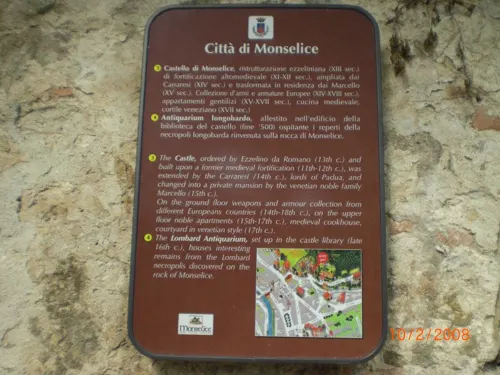

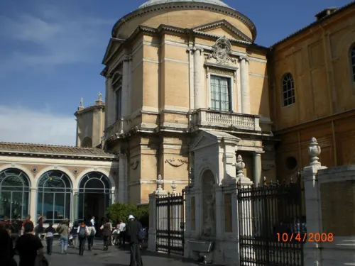

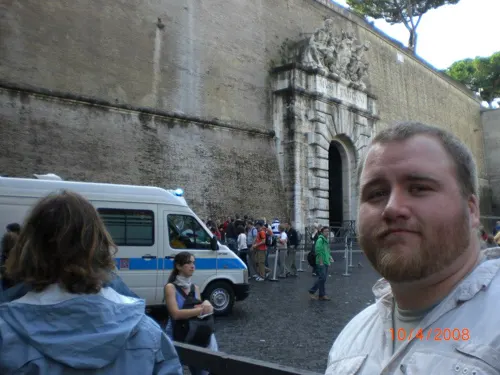

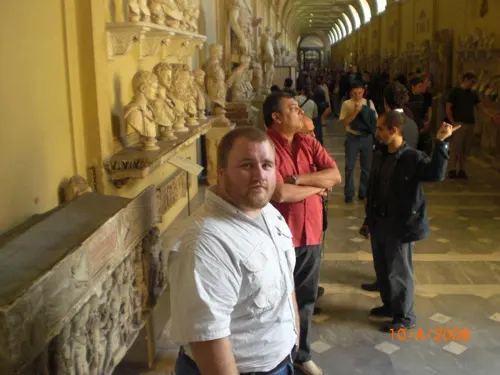

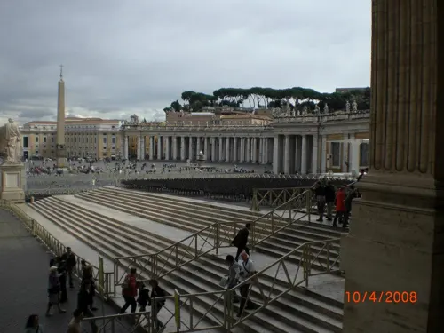

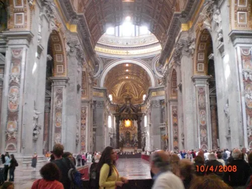

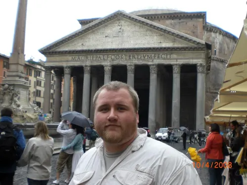

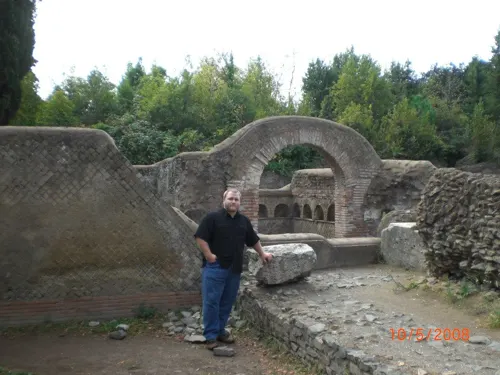

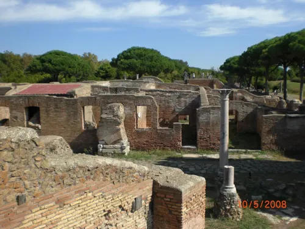

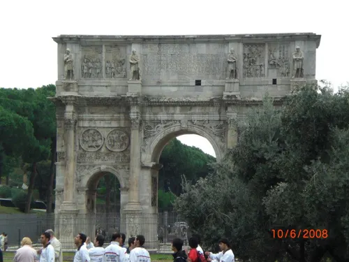

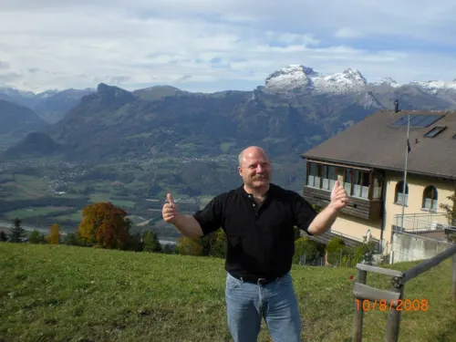

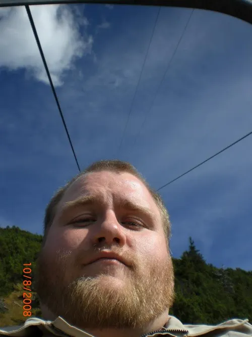

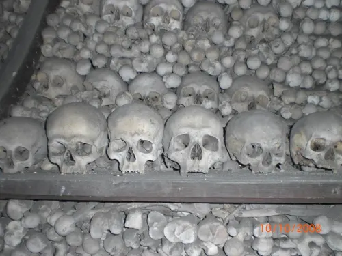

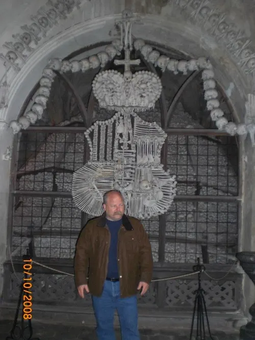

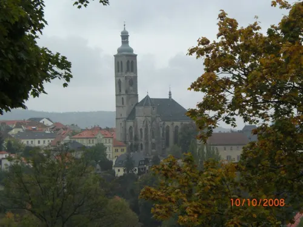

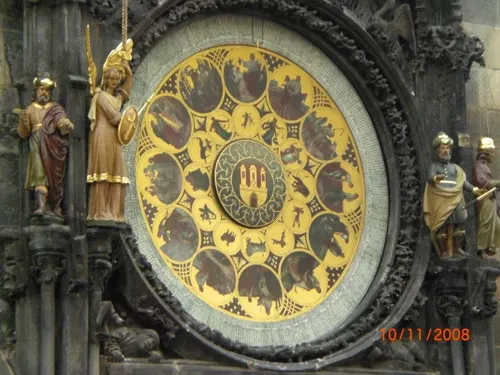

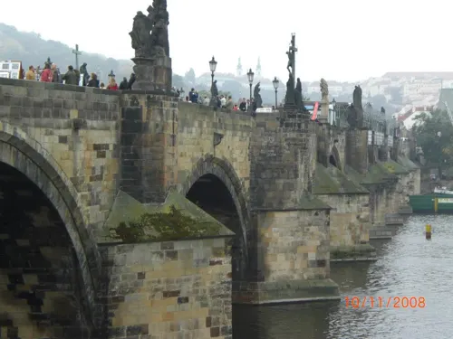

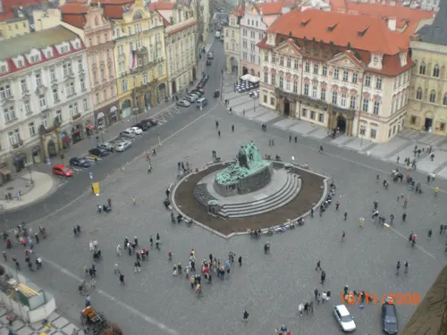